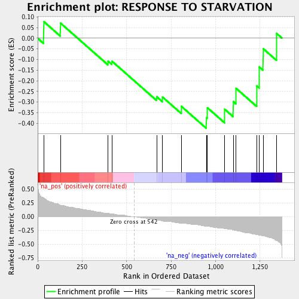
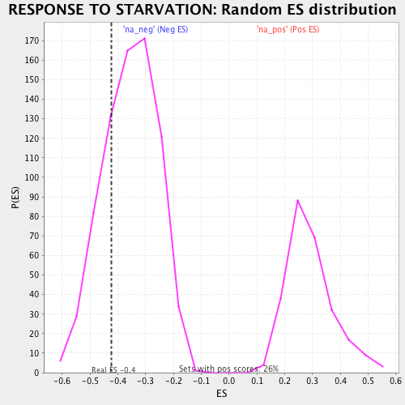

| | | Dataset | ranked_by_GAP.rnk |
| Phenotype | NoPhenotypeAvailable |
| Upregulated in class | na_neg |
| GeneSet | RESPONSE TO STARVATION |
| Enrichment Score (ES) | -0.42329764 |
| Normalized Enrichment Score (NES) | -1.1926435 |
| Nominal p-value | 0.23108108 |
| FDR q-value | 0.5013668 |
| FWER p-Value | 1.0 |
Table: GSEA Results Summary

Fig 1: Enrichment plot: RESPONSE TO STARVATION
Profile of the Running ES Score & Positions of GeneSet Members on the Rank Ordered List
| PROBE | GENE SYMBOL | GENE_TITLE | RANK IN GENE LIST | RANK METRIC SCORE | RUNNING ES | CORE ENRICHMENT | | 1 | NPR3 | | | 34 | 0.351 | 0.0779 | No |
| 2 | GIS1 | | | 128 | 0.209 | 0.0709 | No |
| 3 | IRS4 | | | 395 | 0.059 | -0.1075 | No |
| 4 | OPY2 | | | 417 | 0.051 | -0.1078 | No |
| 5 | MIG1 | | | 669 | -0.059 | -0.2751 | No |
| 6 | HST4 | | | 702 | -0.075 | -0.2766 | No |
| 7 | PHO5 | | | 808 | -0.115 | -0.3203 | No |
| 8 | RVS161 | | | 949 | -0.170 | -0.3734 | Yes |
| 9 | SUT2 | | | 954 | -0.170 | -0.3265 | Yes |
| 10 | NPR2 | | | 1052 | -0.217 | -0.3341 | Yes |
| 11 | PRB1 | | | 1100 | -0.241 | -0.2980 | Yes |
| 12 | SNF1 | | | 1116 | -0.249 | -0.2359 | Yes |
| 13 | NPP1 | | | 1232 | -0.328 | -0.2243 | Yes |
| 14 | DPL1 | | | 1246 | -0.336 | -0.1353 | Yes |
| 15 | SNF2 | | | 1268 | -0.346 | -0.0491 | Yes |
| 16 | RIM15 | | | 1344 | -0.431 | 0.0221 | Yes |
Table: GSEA details [plain text format]

Fig 2: RESPONSE TO STARVATION: Random ES distribution
Gene set null distribution of ES for RESPONSE TO STARVATION